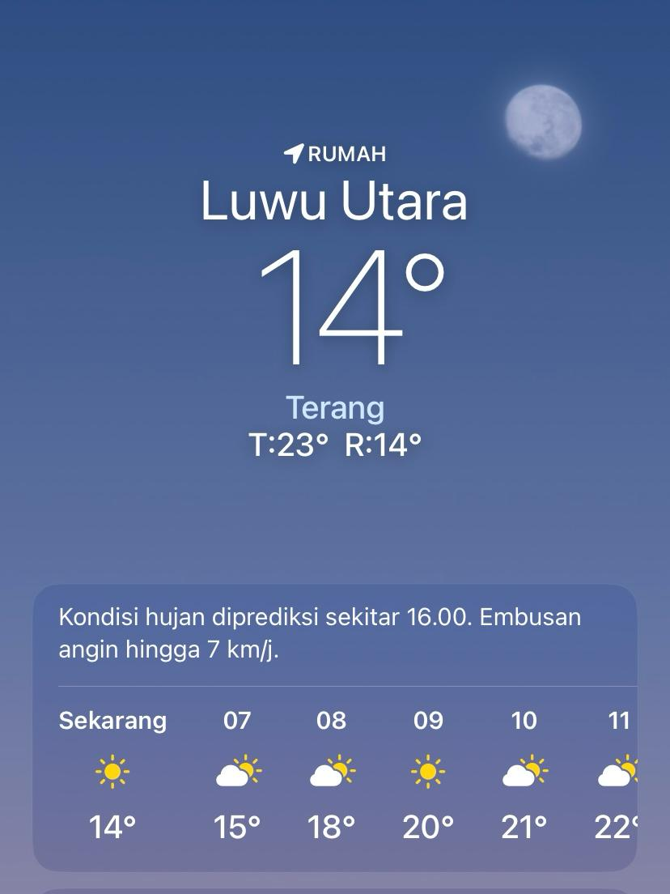
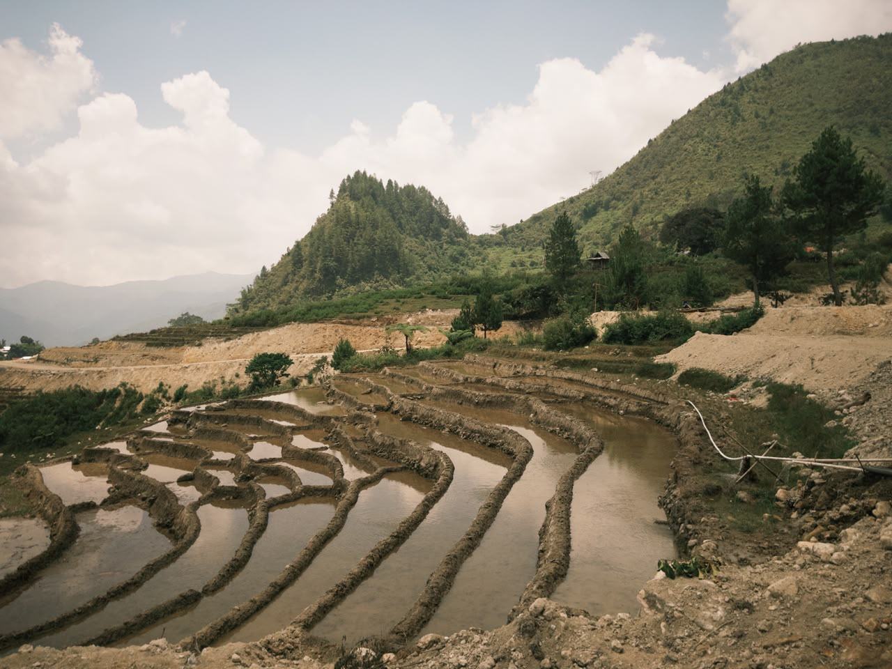
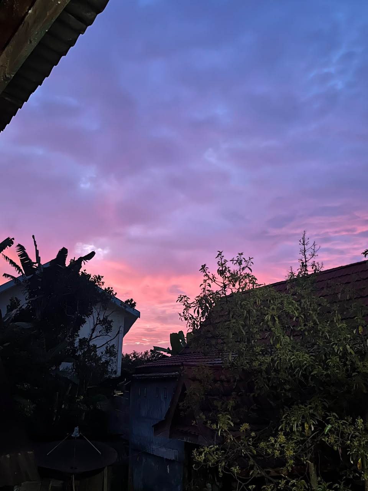
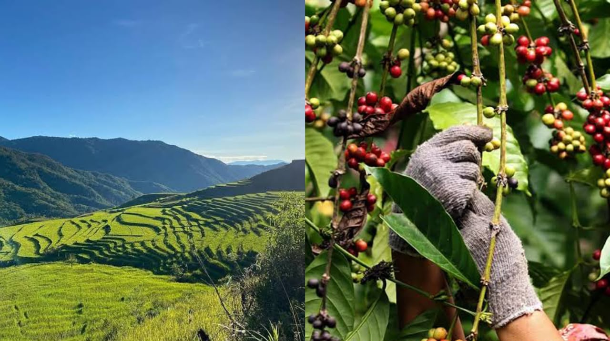

Desa Limbong
Menjaga adat, merawat tanah leluhur
Komunitas Adat Limbong, Tana Rongkong, Luwu Utara
KKN UIN PALOPO ANGKATAN XLVIII
Gulir ke bawah ↓Sejarah Desa dan Komunitas Adat Limbong
Komunitas adat Limbong adalah keturunan Lamarancina yang disebut To Rongkong, sepupu satu kali Sawerigading. Lamarancina menyebarkan keturunan pertama di tanah Rongkong. Kampung pertama persebaran manusia di Tana Rongkong adalah Kanandede (Ne'Bulu) dan Uri (Ne'Muala), keduanya bersaudara.
Limbong adalah komunitas di Tana Rongkong yang mengangkat Tomakaka pertama bernama Wijo Langi, lalu membentuk kelembagaan adat hingga Tomakaka saat ini, Hj. Wajallangi. Masyarakat mendiami kampung ini turun-temurun sambil menyebarkan adat istiadat dan mengangkat perangkat adat.

Pemimpin ditentukan melalui musyawarah (massiaja'). Tomakaka pertama adalah Tomakaka Salassa' dan Tomakaka Jalajja'.
Alur silsilah
- Lamarancina
- Kanandede & Uri
- Wijo Langi
- Tomakaka
- Hj. Wajallangi
Perangkat Kelembagaan Adat
Tomakaka
Pemimpin masyarakat adat yang menjalankan hukum adat. Terdiri dari Tomakaka Salassa dan Tomakaka Jalajja.
Tosiaja
Berkaitan dengan keamanan dan ketertiban, serta musyawarah.
Pongngarong
Berkaitan dengan membangun kehidupan masyarakat adat.
Sejarah Kepemimpinan Tomakaka Limbong
Berdasarkan wawancara dengan Hj. Wajallangi.
- 1946
Nenek Makkasau, yang sempat menjabat Tomakaka Limbong, meninggal dibunuh oleh Belanda pada masa penjajahan.
- 1954
Masyarakat Rongkong diungsikan ke kota akibat pemberontakan DI/TII. Seluruh kampung dari Desa Pongtattu (Salukanan) sampai Salurante-Amboan terbakar, termasuk lumbung padi. Hanya tersisa satu rumah adat di Desa Komba, yang kemudian diruntuhkan oleh kepala desa saat itu, sehingga rumah adat di Rongkong tidak lagi ada. Warga yang tidak mengungsi bersembunyi di hutan selama beberapa bulan.
- 1962
Masyarakat diperbolehkan kembali ke Rongkong. Perangkat adat Pongngarong dan Tosiaja' sudah ada, tetapi Tomakaka belum.
- 1972
Setelah tidak ada paman yang bersedia, tokoh adat menunjuk suami Hj. Wajallangi. Setelah meminta nasihat ayahnya di Sabbang (yang juga Tomakaka Pongtattu), diadakan pasitandrapadang.
- 1985
Pengukuhan dilaksanakan setelah hasil pertanian meningkat tiga tahun berturut-turut dan pasangan Tomakaka (dua Tomakaka: Unnisunggi Jalajja' dan Unnisunggi Salassa') sudah ada. Pesta adat memotong minimal lima kerbau: Ma'bangungan Padang, Rengnge' sebagai syukur kepada masyarakat, Tomakaka yang dikukuhkan, dalam rumah bersama Indo' Dapo', dan untuk pasangan atau orang tuanya.
- 1993
Suami Hj. Wajallangi wafat, jabatan dilimpahkan kepada istrinya. Hj. Wajallangi menjadi pemangku adat Limbong dari 1993 hingga sekarang.
Baca selengkapnya: proses pengangkatan Tomakaka
Pasitandrapadang. Tahap musyawarah dalam proses pengangkatan Tomakaka.
Pangadaranpitu. Tujuh kampung yang dipimpin Matua, bukan Tomakaka.
Pongngarong Manganan. Berperan mendoakan dengan bahasa sastra daerah.
Syarat pengukuhan. Berdasarkan hasil pertanian. Jika hasil pertanian merosot, pengukuhan tidak dilaksanakan, disebut "Dipantungku".
Percakapan dengan Orang Tua Hj. Wajallangi
Potensi Alam dan Ekonomi
Desa Limbong memiliki potensi utama berupa panorama pegunungan tertinggi, sawah berundak yang indah, dan udara sejuk dataran tinggi.
Keindahan dan Wisata Alam

Wakatar dan Villa Gerani Nase
Mencakup tempat wisata yang ada di Desa Limbong.

Suhu Dingin
16–19°C siang hari, turun hingga 14°C malam hari, mirip kawasan Malino di Gowa.

Persawahan Terasering
Liukan pematang yang tersusun rapi.

Lanskap Sunrise/Sunset
Latar pegunungan dan hamparan awan.
Pertanian dan Sumber Daya

Tanah subur, hasil yang menghidupkan.
Persawahan terasering dan lahan pertanian menjadi fondasi ekonomi serta identitas masyarakat adat Limbong.
Pertanian Sawah
Sebagian besar warga adalah petani sawah, memanfaatkan kesuburan tanah pegunungan.
Hortikultura dan Kopi
Dataran tinggi mendukung produk kopi lokal dan tanaman hortikultura.
Budaya dan Tradisi
Masyarakat adat Limbong hidup di pegunungan dengan menjunjung tatanan adat leluhur yang terikat secara historis dengan kedatuan Luwu. Rongkong dikenal sebagai Tana Masakke (tanah yang diberkati/penuh berkah).


Nilai yang dijaga: kebersamaan, gotong royong, kearifan lokal dalam mengelola alam (pertanian dan perkebunan kopi di wilayah Uro), sistem kekerabatan yang kuat, dan hukum adat yang dipimpin Tomakaka.
Prosesi Bercocok Tanam Padi
- Ma'tosso (umbungka tana)
- Ma'palau'lalan (mangambo)
- Ma'pandanan pebuak
- Ma'rinding
- Ma'rampang
- Mangkale'te' (mepare)
- Ma'po'o
- Ma'bangunan tendan (manganna)
- Manampun (umpussai pentaunan)
Hukum Adat Rongkong
Dikenal dengan nama Sapa' Sangpulo Pitu, terdiri dari 17 bagian.
Catatan: "Dilompo-lompo" artinya didenda dengan memotong ayam sampai sepuluh ekor.
Bahasa
Masyarakat Limbong secara turun-temurun menggunakan Bahasa Rongkong sebagai bahasa ibu, salah satu identitas penting suku Rongkong di dataran tinggi Luwu Utara.
(lihat keadaan saya bagaimana)
Seni dan Kerajinan Tradisional
Tenun Ikat Rongkong
Kain tenun tradisional yang diwariskan turun-temurun dengan motif berfilosofi kehidupan.

Sekong Sirenden Sipomandi

Pa’gandrang Lolo dan Pa’gandrang Kaindo
Seni Tari
Tarian tradisional dipentaskan saat penyambutan tamu adat atau perayaan.

Tari Majjaga
Simbol persahabatan.